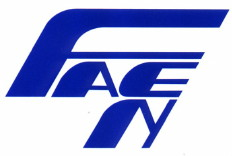

Le syndicat des agrégé(e)s (collège, lycée, CPGE), PRAG, PRCE (Supérieur), Professeurs de chaire supérieure, Enseignants-chercheurs
Le syndicat qui se bat pour que :
- les établissements d’enseignement soient consacrés en priorité à la transmission des savoirs,
- les droits des professeurs soient enfin l’objet d’une application effective,
- leurs intérêts individuels et collectifs, matériels et moraux soient effectivement défendus,
- les syndicats n’aient d’action que professionnelle.

Signer et faites signer la pétition
PRAG & PRCE, nous ne sommes pas des « ESAS » mais des personnels de l'Enseignement supérieur !
Un PRCE à l'Université de Nanterre reçu à l'agrégation 2023 muté contre son gré dans le secondaire pour son stage de titularisation. Signer et faire signer la pétition en ligne pour qu'il réintègre son poste.
Qui sommes nous?
Nos positions sur l'enseignement
Actualités
Les bulletins officiels de l'EN
Les bulletins officiels du MESR
La lettre d'information du SAGES
Informations administratives : second degré
Informations administratives : enseignement supérieur
Les numéros de MESSAGES, le bulletin du SAGES
Information/Documentation
Propositions et revendications du SAGES
Les obligations de service des PRAG et des PRCE
Adhérer au SAGES
Liens
Rechercher sur le site :

Fil d'actualités
Notre page spéciale élections professionnelles 2026
Second courriel du SAGES aux électeurs du CSAM de l'ESR (26/11/2026).
Conférence du Conseil de l’Europe sur la liberté académique, « des défis à une protection renforcée », les 25 et 26 novembre 2026, avec le président du SAGES et deux de ses coauteurs d’un article sur la liberté académique (25/11/2026).
« Les abus et les fraudes aux aides à l'apprentissage », rapport de la Cour des comptes (25/11/2026).
Date limite d'inscription aux concours de recrutement d'enseignants du second degré repoussée au 2 décembre 2026 à 12h, heure de Paris. Cela devient une habitude tous les ans, tant les candidats se bousculent pour rejoindre un métier si choyé et si bien rémunéré ! (24/11/2026).
IA et éducation : une résolution mondiale pour la protection des données (CNIL) (21/11/2026).
L’incorporation de l’article L 952-2 du Code de l’éducation dans le décret PRAG et PRCE et assimilés est-il une avancée ? (20/11/2026).
L'agrégation par liste d'aptitude pour les PRCE et assimilés (PEPS et PLP affectés dans le supérieur), état des lieux et évolutions proposées par le SAGES (20/11/2026).
Un premier vivier de facto pour les PRCE en matière d'accès au corps des professeurs agrégés par liste d'aptitude (18/11/2026).
Courriel de la liste d'union SNCL-SIES-SAGES aux électeurs de la CAPN des personnels enseignants et d'éducation (18/11/2026).
Les PRAG « agrégés préparateurs » des ENS comme levier pour bénéficier du RIPEC (16/11/2026).
RIPEC: l'invocation par le SAGES du droit pour les PRAG et les PRCE de jouir de conditions de travail justes et favorables qui assurent notamment un salaire équitable et une rémunération égale pour un travail de valeur égale sans distinction aucune (14/11/2026).
L'enseignement supérieur en sciences industrielles en danger (tribune libre) (11/11/2026).
CSAMESR 2026 : pourquoi le vote utile des PRAG et des PRCE c'est pour le SAGES (9/11/2026).
Déclaration de Paris sur l'indépendance des académies et la liberté académique S7-2026 (7/11/2026).
La page spéciale du SAGES consacrée aux élections professionnelles de décembre 2026 est ouverte ce jour et accessible par le lien permanent en haut de ce fil d'actualités. Retrouvez nos listes de candidats et nos professions de foi des scrutins pour lesquels le SAGES et ses alliés sont candidats (5/11/2026).
Charte des étudiants du Conseil de l'Europe. Le SAGES explicitera le sens et la portée de cette Charte lorsque son contenu sera publié et son articulation avec les libertés académiques des enseignants du supérieur en France (4/11/2026).
Décrets n°2026-1016 et n°2026-1017 du 2/11/2026 relatifs au cumul emploi retraite (4/11/2026).
La lettre d'information n°12 du SAGES est disponible en téléchargement Pour la recevoir automatiquement dès parution, abonnez-vous sur cette page (1/10/2026).
La liste SAGES-SNCL-SIES pour l'élection au CSAMESR et considérations relatives à cette élection (31/10/2026).
Décret n°2026-1011 du 28/10/2026 relatif à la possibilité pour un agent public d'exercer à titre accessoire une activité d'assistant familial et la possibilité, pour un accueillant familial employé par une personne morale de droit public, d'exercer une autre activité (30/10/2026).
Aide de 100 € pour les travailleurs « grands rouleurs » y compris les agents publics renouvelée pour les mois d'octobre, novembre et décembre 2026 Demande à effectuer à partir du 27 octobre 2026 sur impots.gouv.fr (25/10/2026).
Notre fil complet d'actualités
|
|
Nous joindre: |
 |
|